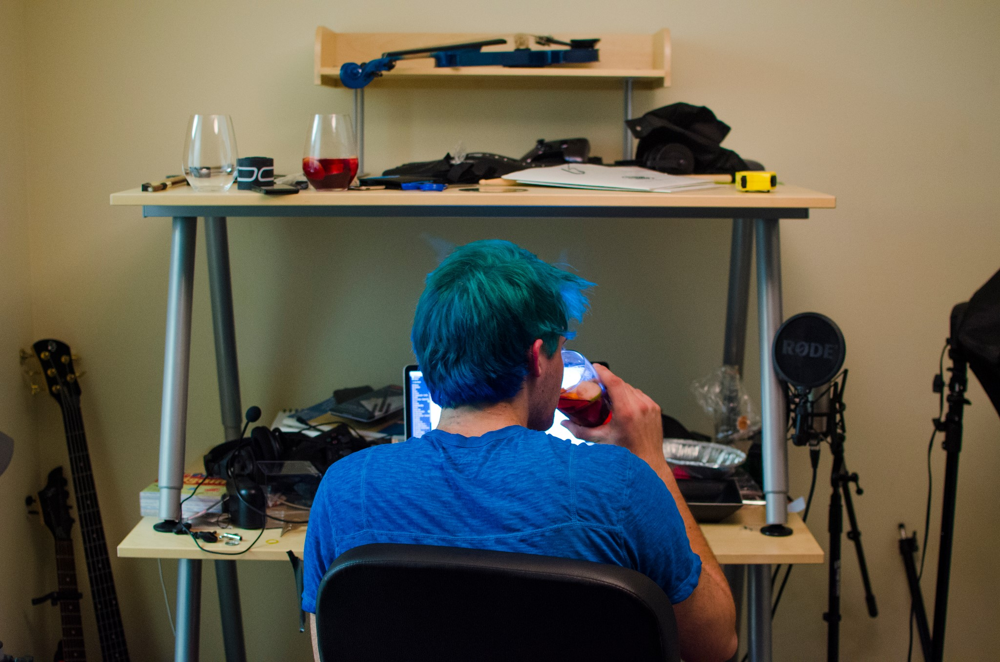

Written by Chris Biscardi who lives and works in San Francisco building useful things. Follow on Twitter
 Written by Chris Biscardi who lives and works in San Francisco building useful things. Follow on TwitterWritten by Chris Biscardi who lives and works in San Francisco building useful things. Follow on Twitter
Written by Chris Biscardi who lives and works in San Francisco building useful things. Follow on TwitterWritten by Chris Biscardi who lives and works in San Francisco building useful things. Follow on Twitter